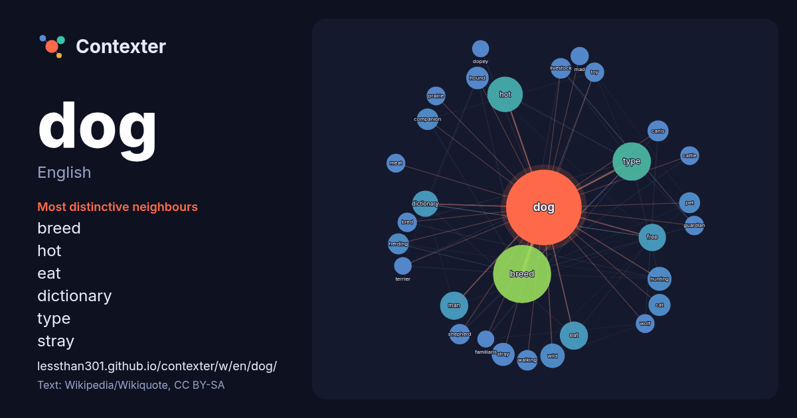

English · popular word
dog
The words found around it in 2064 instances from English Wikipedia, Wikiquote and Hacker News.

Most distinctive neighbours
- breed 133×
- hot 36×
- eat 32×
- dictionary 29×
- type 24×
- stray 24×
- hound 23×
- hunting 22×
- herding 21×
- canis 21×
- wild 20×
- companion 19×
- pet 19×
- shepherd 19×
- livestock 18×
- cat 18×
- bred 17×
- toy 17×
- walking 16×
- prairie 16×
× = how many times more often than in general English Wikipedia text.
Most frequent neighbours
- breed 153
- type 67
- hot 57
- american 50
- film 45
- eat 36
- man 36
- free 34
- show 33
- dictionary 31
- red 31
- island 30
- police 28
- white 27
- wild 27
- hunting 26
- little 25
- stray 24
- black 23
- hound 23
In context
- The dog (Canis familiaris or Canis lupus familiaris) is a domesticated descendant of wolves. Also called the domestic dog, it was selectively bred during Wikipedia snippets · Dog
- Look up dog, doggy, or doggie in Wiktionary, the free dictionary. The dog is a domesticated canid species, Canis familiaris. Dog, dogs, DOG, or DOGS may Wikipedia snippets · Dog (disambiguation)
- Look up dog eat dog in Wiktionary, the free dictionary. Dog Eat Dog may refer to: Dog Eat Dog (1964 film), an Italian film Dog Eat Dog (2001 film), a UK Wikipedia snippets · Dog Eat Dog
- Wife & Dog is an upcoming action thriller film written and directed by Guy Ritchie. The film is produced by Black Bear Pictures. The film is scheduled Wikipedia snippets · Wife & Dog
- A hot dog is a grilled, steamed, or boiled sausage served in the slit of a partially sliced bun. The term hot dog can also refer to the sausage itself Wikipedia snippets · Hot dog
- Shepherd, also known in Britain as an Alsatian, is a German breed of working dog of medium to large size. It is characterized by its intelligent and obedient Wikipedia snippets · German Shepherd
- Dog sex may refer to: Sexual behavior of dogs Canine reproduction, a social behavior of the domestic dog Dog breeding, the practice of mating selected Wikipedia snippets · Dog sex
- Look up hound dog in Wiktionary, the free dictionary. Hound dog or Hound Dog may refer to: Hound, a type of dog that assists hunters by tracking or chasing Wikipedia snippets · Hound dog
More English words
- art
- autumn
- bell
- bread
- bridge
- cat
- city
- climate
- clock
- death
- desert
- family
- food
- forest
- garden
- god
- gold
- health
- heart
- history
- honey
- horse
- island
- language
- life
- map
- mirror
- money
- mother
- mountain
- nature
- power
- rain
- road
- salt
- science
- shadow
- silence
- song
- star
- storm
- summer
- tea
- time
- train
- truth
- water
- winter
- work
Precomputed on 2026-10-09 with default settings (±5 words, medium corpus). The interactive map can refresh it with live data.